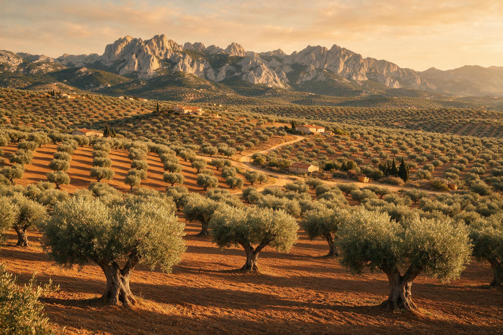
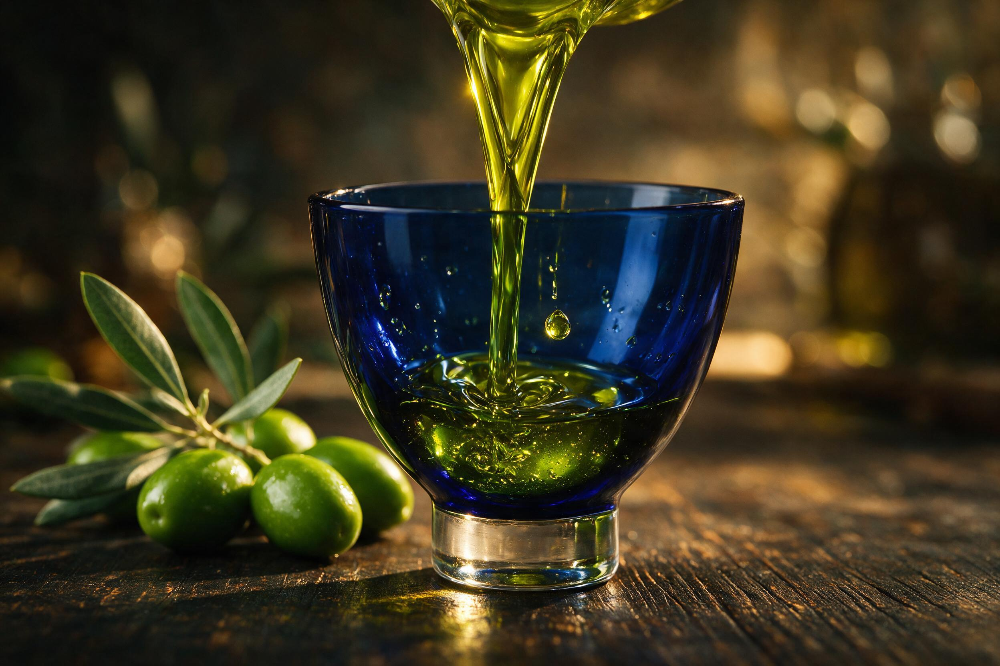
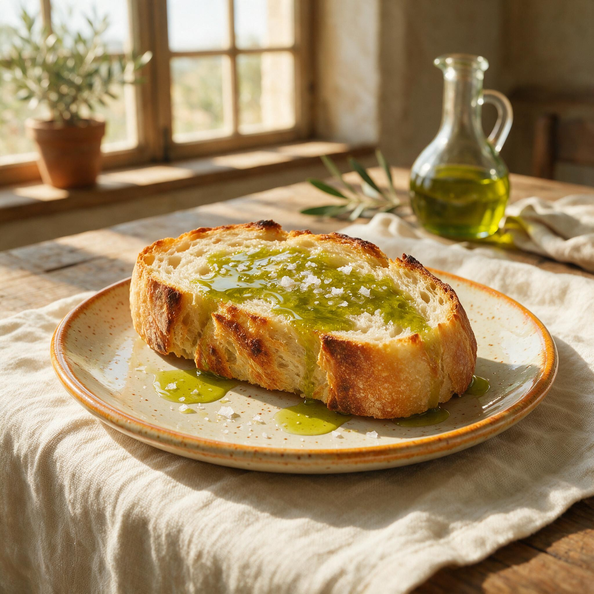
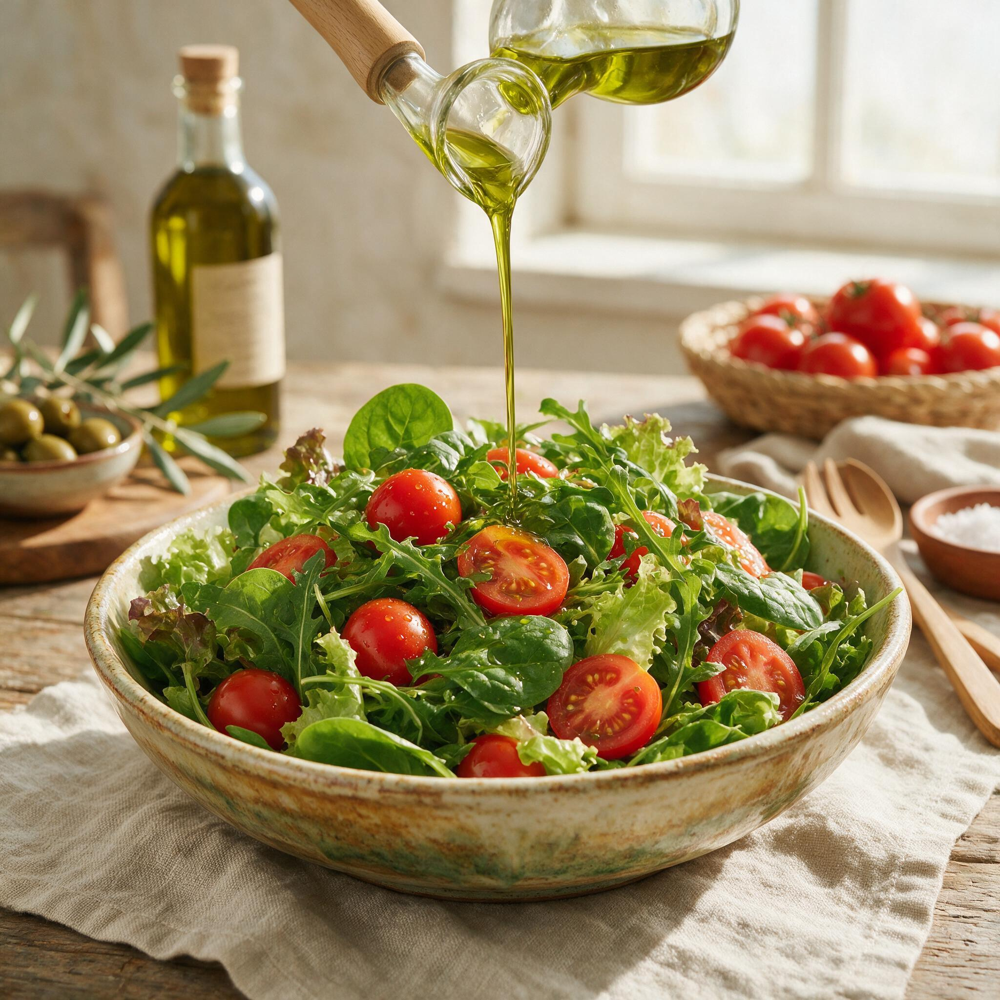

100% Picual
La variedad más noble de Jaén. Robusta, frutada e inconfundible.
Prelanzamiento · Cosecha 2026
100% Picual. Un aceite intenso, elegante y profundamente mediterráneo.
Sierra Mágina · Jaén
El origen
“Un aceite pensado para quien entiende que el sabor también puede contar un lugar.”
AURO nace en un paisaje de olivos, luz seca y tierra noble. Cosecha temprana, recogida en el momento exacto, para capturar el verdor y la fuerza de la aceituna Picual.

El viaje del origen
España produce ~la mitad del aceite del mundo y Jaén es su capital. Recorre el viaje, en 3D, hasta nuestro olivar de montaña.
Carácter
La variedad más noble de Jaén. Robusta, frutada e inconfundible.
Recogida cuando la aceituna aún está verde. Máximos polifenoles.
Prensado por debajo de 27 °C. Se conservan aroma y nutrientes.
Sierra Mágina, corazón olivarero del mundo. Trazabilidad total.
Análisis & cata
Cosecha temprana 100% Picual. Esto es, de verdad, lo que hay dentro de cada lata.

Cosecha temprana: máximos antioxidantes (>250 = saludable).
Muy por debajo del límite AOVE (≤0,8%). Menos = más puro.
Frescura óptima (límite legal ≤20).
* Valores de ejemplo de la cosecha 2026. Sustitúyelos por los de tu analítica.
La lata
Toca cada punto y descubre qué hace especial a esta lata.
La luz es el peor enemigo del aceite: lo oxida y le roba aroma y antioxidantes. La lata bloquea el 100% de la luz y el oxígeno, por eso los polifenoles y la vitamina E llegan intactos a tu mesa: más sabor y todo su valor saludable. Además, el aluminio es ligero, irrompible y se recicla una y otra vez sin perder calidad.
Sierra Mágina, en el corazón de Jaén, cuenta con su propia D.O.P.: un sello europeo que garantiza el origen, la variedad y la calidad del aceite de esta sierra. Altitud, frío y sol que dan un aceite más aromático y equilibrado.


La variedad más noble y estable de Jaén. Rica en antioxidantes, de frutado verde intenso, con un amargor y un picor nobles que delatan un aceite vivo.
Recolectada en octubre, aún verde. Da menos aceite por aceituna, pero conserva los máximos polifenoles y aroma. Calidad por encima de cantidad.
El formato perfecto para disfrutarlo fresco en semanas, no en meses. Consérvalo en un lugar fresco y oscuro y úsalo en crudo para notarlo todo.
El proceso
Seis pasos y pocas horas. Desliza para verlo →
En crudo
Recién abierto, en frío: sobre una tostada, unas hojas o unas verduras a la brasa. Un chorro final que realza lo que ya tienes.

Sobre pan caliente, con tomate o solo. El desayuno más sencillo y el mejor.

Un chorro final sobre hojas, tomate o verduras asadas. Aliño y aroma al instante.
Lista de espera
Apúntate y te avisamos en cuanto salga la primera cosecha. Los primeros de la lista entran antes que nadie.
Edición limitada de 1.000 latasPrimera cosecha de octubre · latas numeradas de un lote único, sin reposición.
200 personas ya se han inscrito.
Preguntas frecuentes
La primera cosecha sale en 2026. Quienes estén en la lista serán los primeros en recibir el aviso y tendrán acceso anticipado antes que nadie.
No. Apuntarte es gratis y sin compromiso: solo te avisamos cuando salga la primera cosecha. Puedes darte de baja cuando quieras.
Habrá un precio de lanzamiento exclusivo para la lista. Lo comunicaremos por email antes de abrir la venta, para que los primeros tengan la mejor condición.
Recogemos la aceituna Picual aún verde, en octubre. Así el aceite conserva más polifenoles (antioxidantes), más aroma y un amargor y picor nobles: el sello de un AOVE premium.
Enviamos a domicilio a toda Europa. Prepararemos los envíos cuando abramos la venta; los detalles de plazos y gastos por país llegarán primero a quienes estén en la lista.
Los primeros en apuntarse tendrán acceso anticipado a una inteligencia artificial especializada en recetas para sacarle todo el partido a AURO en la cocina.